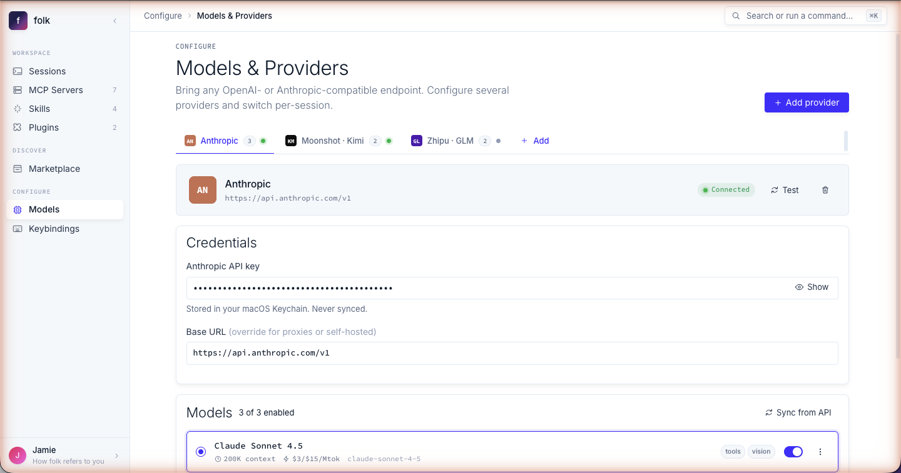

Claude Code for everyone.
A native macOS app built on the official Claude Agent SDK — same agent loop and tool runtime as the claude-code CLI. With form-driven MCP editing, any model provider, and inline rendering for images, tables, and links. Local-first, BYO-key.
@anthropic-ai/claude-agent-sdk
Same loop as the CLI
MCP & hooks compatible
Renders markdown, tables, images

MCP servers without the JSON.
Templates for Filesystem, GitHub, Postgres, Slack, Notion, and more. Schema-aware fields, masked secrets, live test-connect — no editing ~/.claude/mcp.json by hand.
- Pre-built templates for 8+ providers
- Live test-connect per server
- Raw JSON tab for power users
- Marketplace install in one click

Any model. Any provider.
First-class support for Anthropic, OpenAI, Google, GLM, Kimi, Qwen, and any OpenAI-compatible endpoint. Switch providers per session from the composer — same chat, different brain.
- 7 providers out of the box
- Custom OpenAI-compatible endpoints
- Per-model context & output limits
- Hot-swap mid-session

A terminal you can read.
Tables render as tables. Images show inline. Links are clickable. Tool calls collapse into rich cards instead of scrolling past in monospace. Same Claude Code transparency, none of the squinting.
- Markdown, tables, images, links
- Collapsible tool cards
- Wizard blocks for mid-turn forms
- Drag-and-drop attachments
+----------+---------+--------+ | package | version | status | +----------+---------+--------+ | react | 19.0.0 | ok | | zustand | 5.0.0 | ok | | electron | 35.0.0 | warn | +----------+---------+--------+ [Image: chart.png] See https://github.com/anthropics/ claude-code/releases/v2.1
| package | version | status |
|---|---|---|
| react | 19.0.0 | ok |
| zustand | 5.0.0 | ok |
| electron | 35.0.0 | warn |
Three steps to your first session.
Bring your key.
Paste an API key from Anthropic, OpenAI, Google, or any OpenAI-compatible endpoint. Stored locally with macOS safeStorage — never leaves your machine.
~/Library/Application Support/folk/keys.db
Connect your MCP servers.
Pick a template (Filesystem, GitHub, Postgres…), fill the form, hit Test. Or import an existing mcp.json.
templates: filesystem, github, postgres, slack, notion, +3
Start a session.
Open a folder, pick a model, optionally tweak permissions. The exact claude-code invocation is previewed before launch.
claude-code --model sonnet-4.6 --cwd ~/code/folk
Bring your own model.
folk doesn't lock you to one vendor. Configure as many providers as you want, switch per session, or run them side-by-side.
Anthropic
Claude Opus, Sonnet, Haiku — direct from console.anthropic.com.
anthropic
Gemini 2.5 Pro & Flash via AI Studio or Vertex.
google
OpenRouter
One key, every frontier model. Routed, cached, billed once.
openrouter
DeepSeek
DeepSeek-V3, DeepSeek-R1 reasoning — long context, low cost.
deepseek
OpenCode
Open-source code-agent endpoint. Drop-in, OpenAI-compatible.
opencode
Kimi · Moonshot
Kimi-K2 long-context (200K+ tokens). Free tier available.
kimi
GLM · Zhipu
GLM-4.6, GLM-4-Air — China-region capable.
glm
Qwen
Qwen3-Coder, Qwen3-Max — Alibaba Cloud or open-weight.
qwen
Custom endpoint
Any OpenAI-compatible API. Paste a base URL and key.
custom
Local-first. BYO-key. No phone-home.
folk doesn't have an account system, doesn't ship telemetry, and doesn't run any of your sessions through our servers. Your keys stay in macOS Keychain. Your sessions stay in ~/.claude/. Your MCP configs stay on disk.
Local-first
Sessions, keys, configs, and history live on your machine. No cloud sync, no account.
BYO-key
You bring keys for the providers you want. We're not in the inference business.
MIT licensed
Source on GitHub. Read it, fork it, audit the binary. Every release signed.
git clone github.com/folk-app/folk